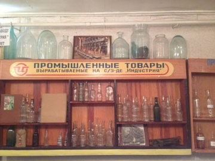

Спирово
Экономика
1.Стекольный завод «Индустрия»
Образован в 1880 году купцом Кругловым. Сначала на заводе выпускали ламповое стекло, потом аптечную тару. С 1925 года называется «Индустрия». На бесцветную водочную бутылку перешли в 1973 году. В 1993 «Индустрия» становится акционерным обществом. Ассортимент расширяется до цветной — коричневой, оливковой, зеленой — бутылки. На заводе делали бутылку. Водочную, коньячную, пивную. Бордо, Славянское застолье, Империал, Казёнка, Позёмка, Царёвка, Государев заказ… На самом деле это много-много бутылок, но заводчане мыслят единственным числом — Бутылка. В 2008 году спрос падает, из-за этого снижают объемы выпуска. В 2011 году завод купила ЗАО «Орехово-Зуевская стекольная компания», начинается строительство нового цеха. В октябре 2013 года происходит авария на основной печи. Завод останавливает производство. К сожалению, завод все еще закрыт, хотя по итогам проведенных совещаний достигнута договоренность о восстановлении в перспективе деятельности завода. Министерство промышленности ведет активные переговоры с ресурсоснабжающими организациями о реструктуризации.
